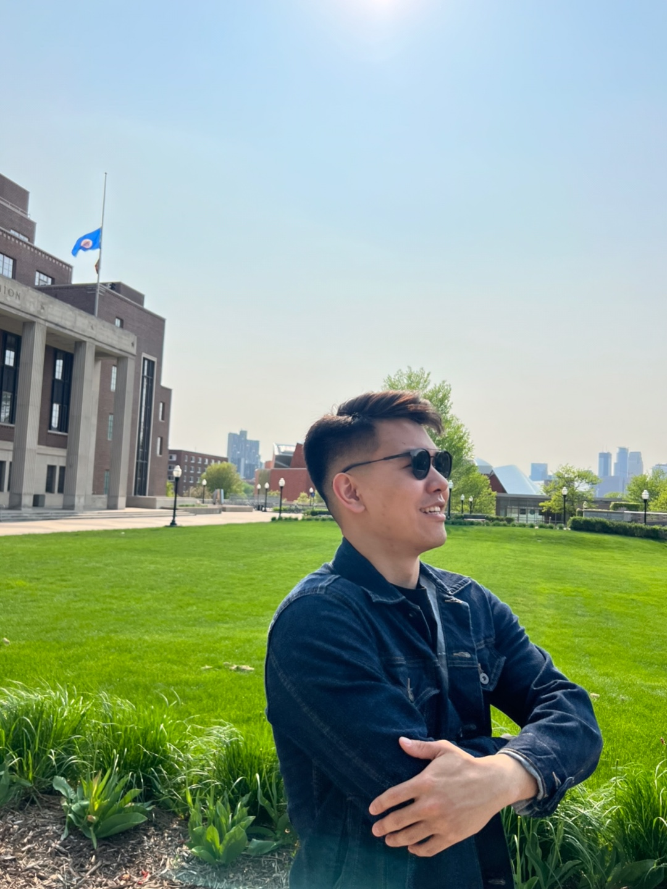

Welcome to Undisputed Power, a powerlifting gym located in the heart of Minneapolis, Minnesota. We pride ourselves on offering top-notch equipment and machines to support lifters of all levels, from beginners to seasoned competitors. Our dedicated team of experienced coaches is here to guide you every step of the way. Beyond the weights and training, we are a community — a place where lifters connect, support one another, and grow stronger together. Come join us and experience a gym built for passion and progress.
Justin Lee (head)
I graduated from the University of Minnesota with a degree in computer science. Having been born in California and raised in South Korea, and then having gone to high school and college in Minnesota, I consider myself a rather multicultural individual. I started my lifting journey in college and was soon introduced to powerlifting by my peers. My passion for training, coupled with a desire to help other like-minded people, led me to dream of building a gym with where people could fully lock in on achieving their goals. I am determined to make Undisputed Power the true embodiment of this dream.